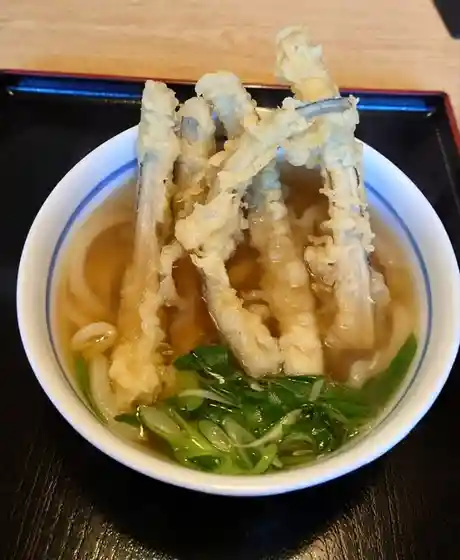
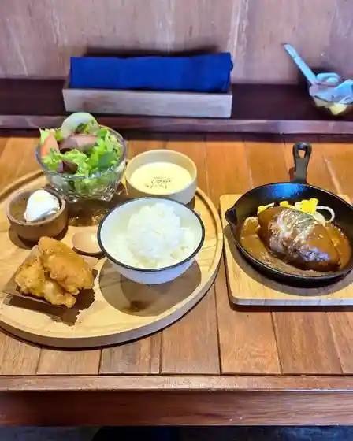
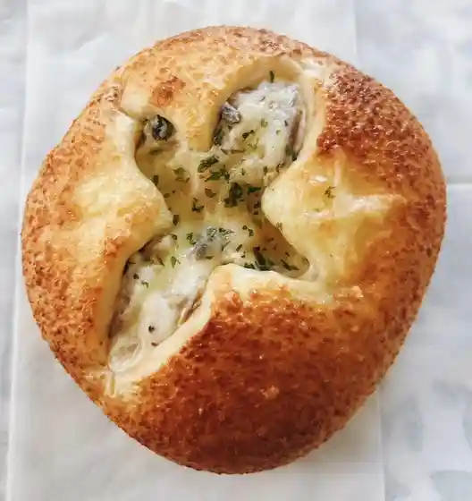
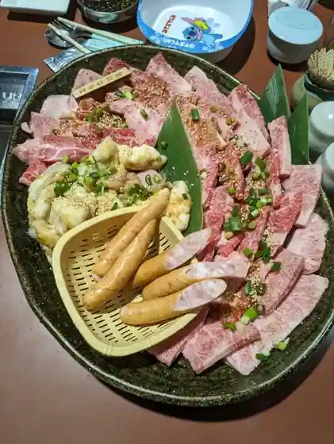
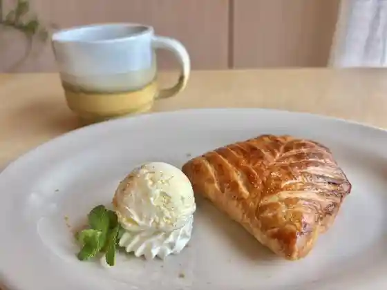
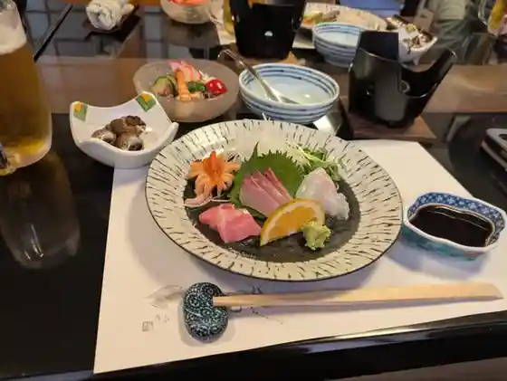
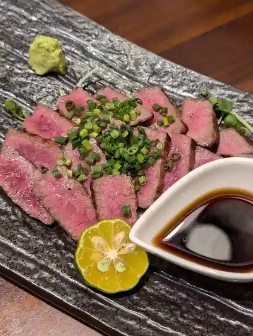
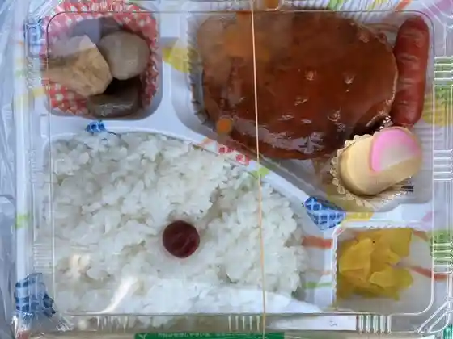
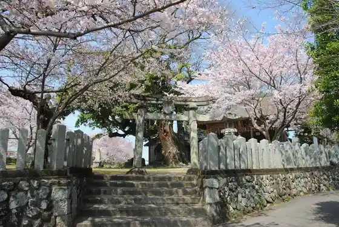
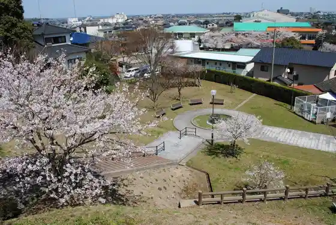

Yoshitomi
Yoshitomi · Fukuoka
Yoshitomi
Highlighted on the Fukuoka map.
Dining
麺処くらや 吉富店
Men Tokoro Kuraya Yoshitomi Mise

HOTEL AZ 福岡吉富店
HOTEL AZ

AJITO
AJITO

やきたて工房 ちるぱん
Yakitate Koubou Chirupan

焼肉 和
Yakiniku Wa

cyeri room
cyeri room

すし亭一眞
Sushi Tei Isshin

かくれが酒場いちまるさん
Kakurega Sakaba Ichimarusan

みむら
Mimura
月ノ韻
Gatsu No In
かくれんぼ
Kakurenbo
side dish garden HALO
side dish garden HALO
梅さん珈琲
Ume San Koohii
からあげ太郎
Karaage Tarou
JA福岡京築 築東地区ふれあい市
Ja Fukuoka Keichiku Chiku Higashichiku Fureai Shi
若山物産
Wakayama Bussan
天山
Tenzan
銀杏の木
Ichou No Ki
ドーゾ カフェ
Doozo Kafe
麺処 博多らぁ麺と明太子 のお店
Men Tokoro Hakata Raa Men To Mentaiko Noo Mise
南水産
Nansui San
牛もつ鍋 よし藤 吉富町店
Ushi Motsu Nabe Yoshi Fuji Yoshitomi Machi Mise
スーパー川食 吉富店
Suupaa Kawa Shoku Yoshitomi Mise
川食 吉富店
Kawa Shoku Yoshitomi Mise
AZcafe Shidaka 福岡吉富店
AZcafe Shidaka
crumu
crumu
セブンイレブン 福岡吉富店
Sebun'irebun Fukuoka Yoshitomi Mise
パンデピス
Pandepisu
アンドカフェ
Andokafe
Kurumachaya
Kurumachaya
Men Dokoro Kuraya
Men Dokoro Kuraya
Fried Chickentaro
Fried Chickentaro
Waraku Do
Waraku Do
Aire Cafe
Aire Cafe
Yukichi Chaya
Yukichi Chaya
Okuie Sushi
Okuie Sushi
And Cafe
And Cafe
Stay
HOTEL AZ 福岡吉富店
HOTEL AZ

Sights
Hachiman Ko Omote Shrine
Kugutsushi (Kugutsu)
Tsubo Shrine (Yoshitomi)

Ten Naka Tera Park

Yoshitomi Fishing Port Sogo Guraundo
JA Chiku Higashi Fureai City
Ten Naka Tera Burial Mound
Suzu Kuma Tera (Yoshitomi)
Hachiman Ko Omote Shrine Megami Kigyu Zo
Suzu Kumayama Park